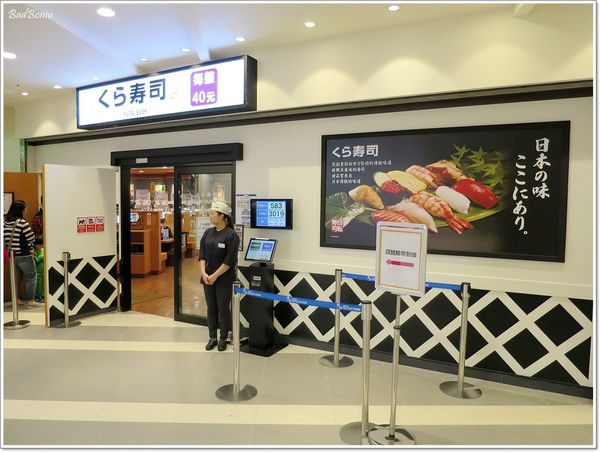

2016年獲得日本顧客滿足度第一
2014年世界首創！壽司得到「Monde Selection」金賞
2014年業界首創！使用最高級BELLOTA的「伊比利豚丼」發售
2013年業界首創！現磨咖啡發售
2013年業界首創！將鮪魚美味發揮到最大值的「熟成鮪魚」發售
2013年業界首創！7種魚介醬汁「壽司店的天丼」發售
2012年業界首創！7種魚介醬油「拉麵」發售
2012年業界首創！吃水果長大的「Fruity Fish」發售
2011年導入「鮮度君 」
2009年美國子公司-「Kula Sushi USA, Inc.」美國一號店(加州)開幕
2005年股票上市-東京証券交易所第一部市場
2004年取得ISO9001認證
2004年股票上市-東京証券交易所第二部市場
2002年導入「觸控螢幕點餐」
2001年股票上市
2000年導入「 BIIKURA-PON」
1999年導入「自動報廢系統」
1997年導入「時間限制管理系統」
1995年成立「KURA CORPORATION股份有限公司」
1984年「回転寿司くら」開業，導入大型店未曾有過的直線型迴轉壽司
1977年以一般壽司店形態在大阪堺市創業
2018年台中港三井OUTLET店開幕
2018年淡水站前店開幕
2018年台中文心秀泰店開幕
2018年新竹巨城店開幕
2018年三重集賢路店開幕
2018年新竹經國路店開幕
2017年中壢大江店開幕
2017年桃園春日店開幕
2017年台北館前店(全球旗艦店)開幕
2017年土藏造型街邊店 台中中清路店開幕
2017年台灣首創！引進日本土藏造型街邊店 台中福科路店開幕
2016年與經濟部簽訂投資意向書(LOI)
2016年高雄漢神巨蛋店開幕
2016年林口三井OUTLET店開幕
2016年中壢站前店開幕
2016年資本額增為31,500萬元
2015年台中廣三SOGO店開幕
2014年台灣一號店開幕-松江南京店
2014年成立台灣子公司成立
品牌故事
企業理念
創新服務
心得